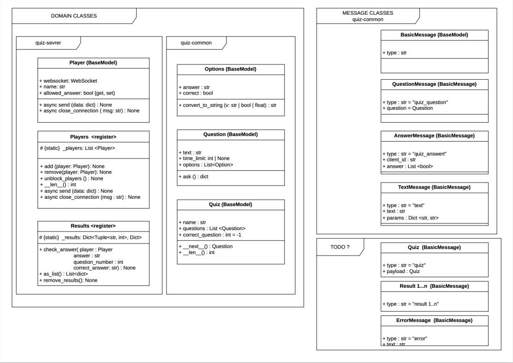
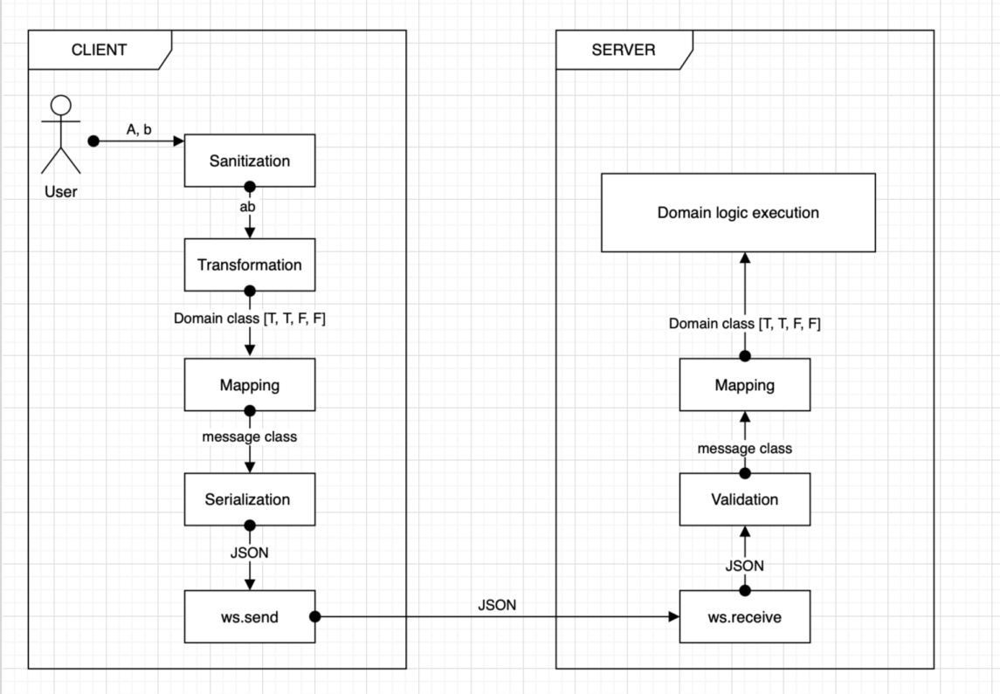

Třináctý sraz
Datum: 2026-05-21
Lektor: David Slavíček
Zápis: Dragča Kvasničková
Na dnešním srazu jsme prošli otevřené PR, na kterých pracují Janča a Olga. Prošli jsme Issue v New/Idea a pak jsme se přesunuli do hostince Pod schody na Nepyvo s tématem "Webdesign a vývoj pod taktovkou AI".
David prošel tabulku projektu a z New/Idea se do Todo posunuly Issues: Handle duplicate player names #16 a Feature: Prevent player from sending answers when no question is active #7
refactor: added print_question method #7
- toto issue řeší Janča
- Cíl: Chceme mít jednotnou funkci v
quiz-common, kterou zavolá server ve chvíli, kdy potřebuje vzít otázku a poslat ji hráči (klientovi) přes síť. - Janča chtěla zkonzultovat postup, jak vyřešit fakt, aby se správná odpověď nezobrazovala uživateli.
- Janča navrhuje v metodě
ask()vzít možnosti(class Option)a jejich atributcorrectnatvrdo nastavit naFalse. Klient tak dostane kompletní data, která potřebuje pro vykreslení, ale uživatel z nich správnou odpověď nezjistí.
New pydantic model class called Message
Co řeší Janča ve svém PR, úzce souvisí s issue, které současně řeší Olga: New pydantic model class called Message #4.
Olga v tomto issue významně mění architekturu projektu a pro lepší pochopení nové struktury k tomu vytvořila i skvělé diagramy, které nám vysvětlila:
Diagram 1: MESSAGE CLASSES a DOMAIN CLASSES

Tento diagram znázorňuje celkovou strukturu projektu, kterou Olga pro přehlednost rozdělila na dvě samostatné kategorie:
1. kategorie : DOMAIN CLASSES (Vlevo)
To jsou třídy, které drží skutečnou logiku hry a kompletní data.
-
Patří sem
Quiz,QuestionaOptions(z quiz-common) aPlayer(z quiz-server). -
Důležitý detail: Třída Question v sobě obsahuje Options, a každá option má v sobě schované políčko
correct: bool. To znamená, že Domain třídy znají správnou odpověď.
2. kategorie: MESSAGE CLASSES (Vpravo)
To jsou „přepravní obálky“ (zprávy), které slouží výhradně k posílání dat po síti.
- Všechny dědí z BasicMessage.
- Patří sem
QuestionMessage,AnswerMessage,TextMessageatd. - Tyto zprávy jsou navržené tak, aby byly bezpečné a obsahovaly jen to, co daná strana (třeba klient) smí vidět.
Diagram 2: Cesta zprávy od uživatele na server:

Tady Olga skvěle znázornila, co se stane, když hráč (User) klikne na odpověď, a jak se data postupně proměňují z kliknutí až po zpracování na serveru.
- User: Uživatel klikne na odpovědi (např. zadá možnosti A, b).
- Client Sanitization: Klient text vyčistí, transformuje a vytvoří z něj vnitřní objekt hry (Domain class, např.
[True, True, False, False]). - MAPPING (Klíčový krok): Klient vezme tento vnitřní objekt a „přelije“ (namapuje) ho do přepravní obálky – message class (v tomto případě
AnswerMessage). - SERIALIZATION: Pydantic vezme tuto message class a zabalí ji do textového formátu JSON.
- SÍŤ (ws.send -> ws.receive): Tento čistý JSON text proletí internetem přes WebSockets od klienta k serveru.
- VALIDATION: Server přijme JSON a Pydantic okamžitě zkontroluje, zda je zpráva v pořádku a odpovídá schématu příslušné message class.
- MAPPING zpět: Server z validované zprávy vytvoří svůj vnitřní objekt (Domain class) a předá ho herní logice (Domain logic execution), která zkontroluje, zda hráč odpověděl správně.
Poznámka: Přesně tento stejný proces (jen v opačném směru – ze serveru ke klientovi) se bude dít s otázkou. Server vezme
Question(Domain), namapuje ji naQuestionMessage(Message), čímž odřízne správné odpovědi, serializuje do JSONu a pošle přesws.sendhráči.
Po implementaci tohoto issue budou v quiz-common dvě třídy, které nějakým způsobem reprezentují otázku - Question a QuestionMessage
Třída Question
- Třída reprezentuje otázku tak, jak je uložená v databázi nebo v YAML souboru. Obsahuje úplně všechna data, včetně správných odpovědí.
- Pracuje s ní pouze backend
(quiz-server)a administrátorské rozhraní(quiz-admin). - Dědí z třídy
QuestionMessagea rozšiřuje ji o atributy pro validaci a určení správné odpovědi.
Třída QuestionMessage
- Slouží pouze pro komunikaci mezi
quiz-serveraquiz-client. - Je to zpráva, kterou server posílá hráči do jeho příkazové řádky ve chvíli, kdy to odklikne admin.
- Je to otázka, která se zobrazí hráči bez správných odpovědí, obsahuje jen atributy:
question_id,textaoptions.
Pointa na závěr
-
Obě holky (Jana i Olga) směřují ke stejnému cíli: Chceme bezpečně a čistě přenášet data mezi serverem a klientem, aniž by hráč mohl v síťové komunikaci vidět správné odpovědi.
-
Jančino řešení (PR #7) je rychlý, okamžitě funkční krok. Vyřeší aktuální bezpečnostní mezeru tím, že data pro klienta prozatím v metodě
ask()ručně upraví a přepíše hodnotucorrectnaFalse. -
Olžino issue (#4) představuje velký, architektonický úkol pro celý projekt. Jakmile bude její komplexní systém tříd
Messageplně implementován, Jančino prozatímní řešení zanikne. Nová architektura ho plně nahradí čistým, automatickým ořezáváním dat přímo přes Pydantic.